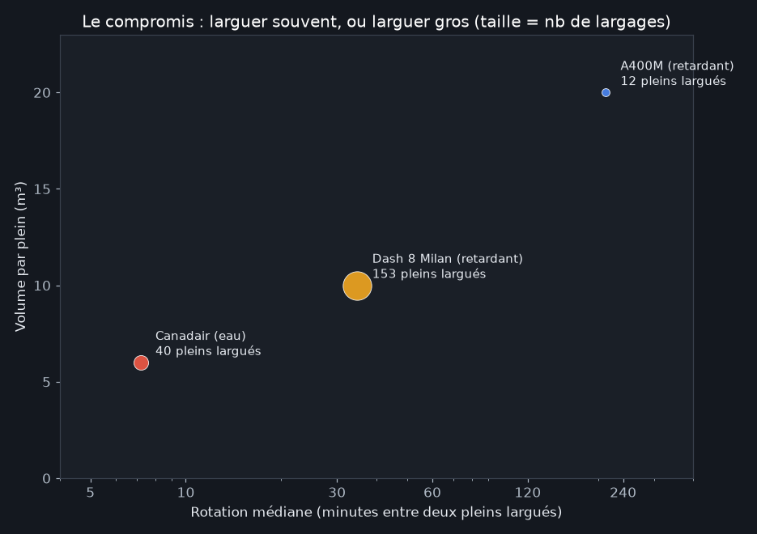
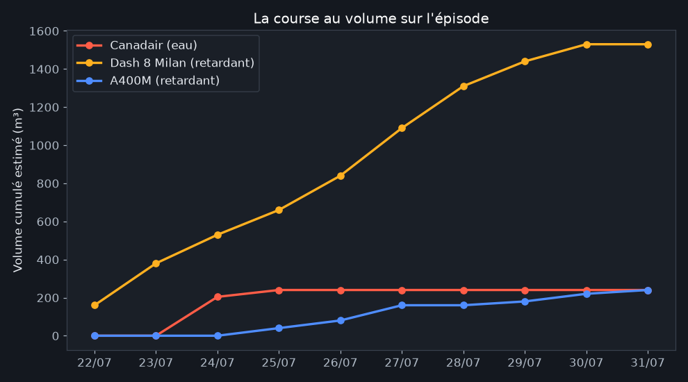
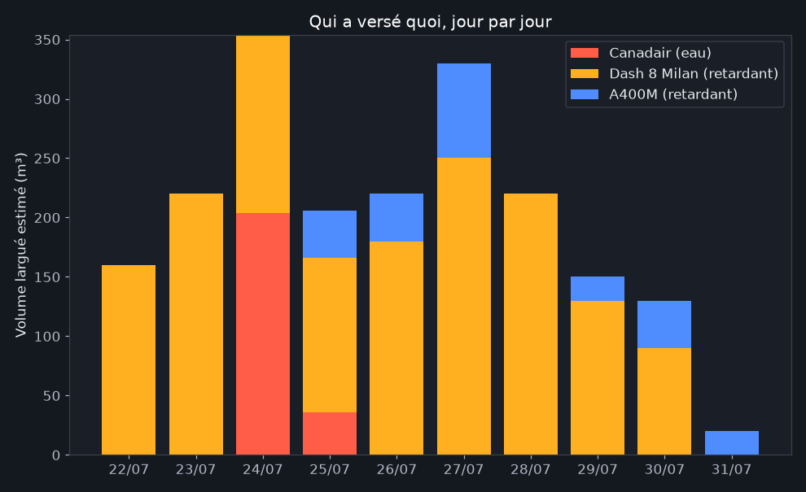
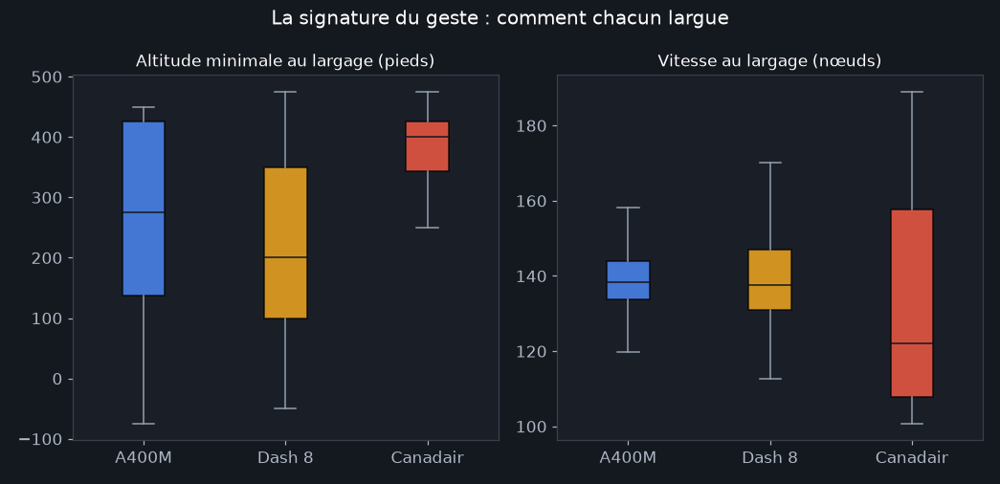

A400M et Canadair : deux doctrines de largage
Publié le 31 juillet 2026
Le 25 juillet, un A400M militaire a réalisé au-dessus de Lacanau le premier largage opérationnel de retardant de l'histoire de cet avion : 20 tonnes d'un coup, "l'équivalent de trois Canadair" selon les commentaires de l'époque. Trois familles d'appareils ont largué sur ces feux : que disent réellement leurs trajectoires ? Comparons : en comparant ce qui est comparable.

Canadair CL-415
6 000 L d'eau écopée sur les lacs
rotation médiane : 7 min
le harceleur : frappe le feu en continu
© sebastien david · planespotters.net

Dash 8 Q400MR "Milan"
10 000 L de retardant, rechargé en base
rotation médiane : 36 min
l'ouvrier de fond : 153 pleins sur l'épisode
© William Verguet · planespotters.net

A400M Atlas
20 000 L de retardant par sortie
cycle complet : ~3 h 30 (recharge en base)
le démonstrateur : 12 sorties, une première mondiale
A400M de l'Armée de l'air · © A-Rafi NA · planespotters.net
D'abord, ne pas comparer l'incomparable
Le Canadair largue de l'eau, directement sur les flammes : effet immédiat, mais qui s'évapore. Le Dash 8 et l'A400M larguent du retardant, un produit chimique rouge posé en avant du feu, sur la végétation encore intacte, et qui reste efficace des heures. L'un éteint, les autres construisent des barrières. Un mètre cube d'eau et un mètre cube de retardant ne font pas le même métier : c'est la première chose que les chiffres bruts ne disent pas.
Le compromis fondamental : souvent, ou gros

Tout est là. Le Canadair recharge en 12 secondes en glissant sur un lac : un plein toutes les 7 minutes. Le Dash retourne à l'aéroport : toutes les 36 minutes. L'A400M, lui, retourne se faire recharger en base : un cycle de 3 h 30, pour un largage trois fois plus gros, souvent réparti en deux passes.
Sur la durée, la cadence l'emporte


Sur l'ensemble de l'épisode, la flotte de six Dash 8 a délivré environ 1 530 m³ de retardant : plus de six fois le volume de l'A400M (~240 m³ en 12 sorties). Le slogan "un A400M = trois Canadair" est vrai par largage, mais sur une journée, un seul Canadair en noria sur un lac proche délivre le triple du volume quotidien de l'A400M (120 m³/jour mesurés contre 40). La cadence bat la taille.
La signature du geste

Les profils de vol racontent la manœuvre : le Dash descend le plus bas (~60 m) pour poser sa ligne de retardant avec précision ; le Canadair travaille légèrement plus haut et plus lentement ; l'A400M, gros porteur de 37 m d'envergure, largue vers 100 m à 140 nœuds : remarquablement bas pour un avion de cette taille, c'était précisément l'objet de la qualification de ses équipages.
Alors, l'A400M, utile ou pas ?
Jugé au seul volume délivré cette semaine-là : non, il n'a pas pesé lourd. Mais ce serait mal lire l'événement : c'était un déploiement expérimental, décidé en urgence, avec des équipages tout juste qualifiés : et il a démontré qu'une capacité de 20 tonnes mobilisable sur n'importe quel feu d'Europe existe désormais. Sa vraie valeur n'est pas dans les mètres cubes de juillet 2026, mais dans l'option stratégique qu'il ouvre : notamment pour les pays sans lacs écopables ni flotte spécialisée. Le Canadair et le Dash restent, eux, les outils du quotidien : et les données le confirment sans appel.
Méthode et limites
Volumes = estimations : pleins détectés × capacité constructeur (Canadair 6 000 L, Dash 10 000 L, A400M 20 000 L). Les passes de largage d'une même mission sont regroupées en "sorties" pour les porteurs de retardant (l'A400M répartit son chargement en ~2 passes) ; chaque passe d'un Canadair compte pour un plein puisqu'il ré-écope entre deux. Décomptes reconstruits depuis les trajectoires publiques : ordres de grandeur, pas comptabilité officielle.
Les Canadair sont sous-représentés dans nos mesures : la couverture des récepteurs au ras de l'eau et du feu est partielle (surtout au sud), et seuls les passages captés sont comptés. Leur volume réel est donc supérieur à nos 240 m³ : ce qui renforce, plutôt qu'il n'affaiblit, la conclusion sur la cadence.
Reproduire : scripts/analyse_a400m.py du
dépôt ·
chiffres bruts. Sources : © adsb.lol contributors (ODbL),
NASA FIRMS. Analyse produite avec l'aide de Claude Code.
← Toutes les analyses · revoir le largage du 25 juillet sur la carte
- 31/07/2026 : première publication.
- 01/08/2026 : recalcul sur l'ensemble des données de production (2,4 millions de lignes, appareils captés automatiquement et journées du 30 juillet au 1er août incluses) ; 12 sorties A400M comptabilisées, volumes réévalués.